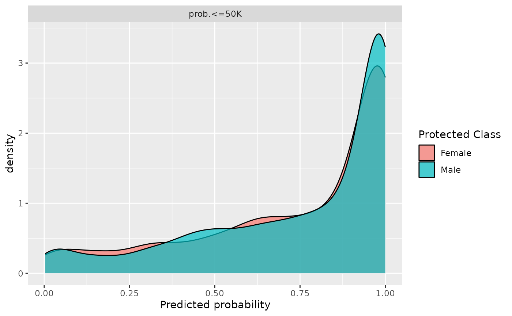
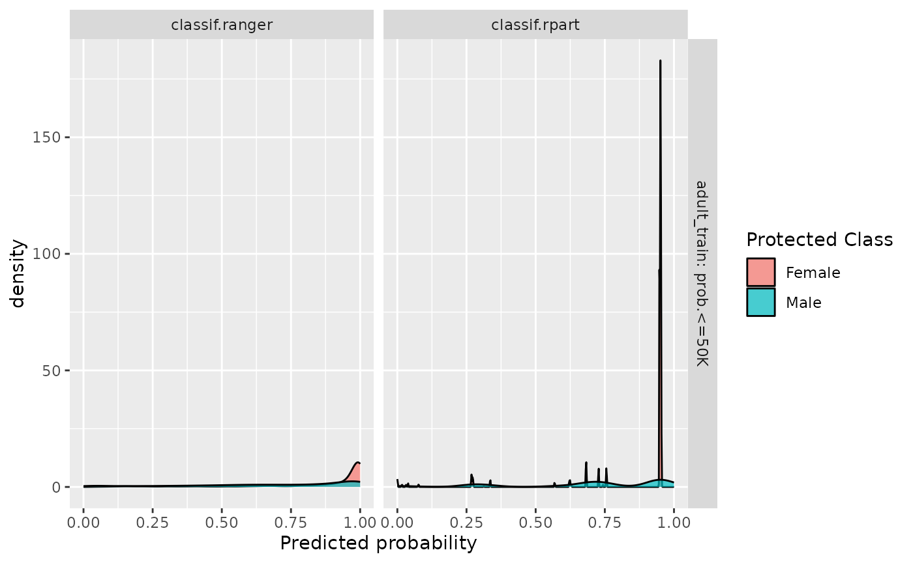
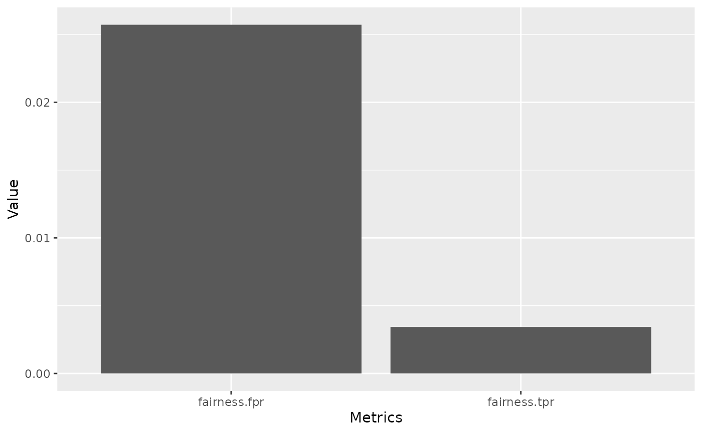
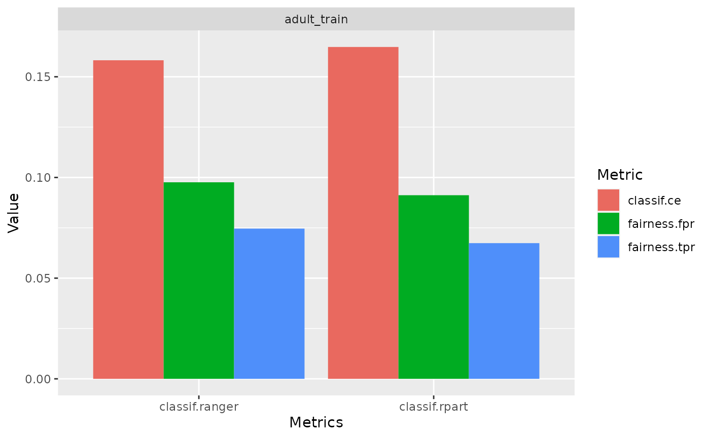

library(mlr3fairness)
#> Loading required package: mlr3
library(mlr3learners)
library(mlr3)Why we need fairness visualizations:
Through fairness visualizations allow for first investigations into possible fairness problems in a dataset. In this vignette we will showcase some of the pre-built fairness visualization functions. All the methods showcased below can be used together with objects of type BenchmarkResult, ResampleResult and Prediction.
The scenario
For this example, we use the adult_train dataset. Keep in mind all the datasets from mlr3fairness package already set protected attribute via the col_role “pta”, here the “sex” column.
t = tsk("adult_train")
t$col_roles$pta
#> [1] "sex"We choose a random forest as well as a decision tree model in order to showcase differences in performances.
task = tsk("adult_train")$filter(1:5000)
learner = lrn("classif.ranger", predict_type = "prob")
learner$train(task)
predictions = learner$predict(tsk("adult_test")$filter(1:5000))Note, that it is important to evaluate predictions on held-out data in order to obtain unbiased estimates of fairness and performance metrics. By inspecting the confusion matrix, we can get some first insights.
predictions$confusion
#> truth
#> response <=50K >50K
#> <=50K 3492 496
#> >50K 268 744We furthermore design a small experiment allowing us to compare a random forest (ranger) and a decision tree (rpart). The result, bmr is a BenchmarkResult that contains the trained models on each cross-validation split.
Fairness Prediction Density Plot
By inspecting the prediction density plot we can see the predicted probability for a given class split by the protected attribute, in this case "sex". Large differences in densities might hint at strong differences in the target between groups, either directly in the data or as a consequence of the modeling process. Note, that plotting densities for a Prediction requires a Task since information about protected attributes is not contained in the Prediction.
We can either plot the density with a Prediction
fairness_prediction_density(predictions, task)
or use it with a BenchmarkResult / ResampleResult:

Fairness Accuracy Tradeoff Plot
In practice, we are most often interested in a trade-off between fairness metrics and a measure of utility such as accuracy. We showcase individual scores obtained in each cross-validation fold as well as the aggregate (mean) in order to additionally provide an indication in the variance of the performance estimates.
fairness_accuracy_tradeoff(bmr, msr("fairness.fpr"))
Fairness Comparison Plot
An additional comparison can be obtained using compare_metrics. It allows comparing Learners with respect to multiple metrics. Again, we can use it with a Prediction:
compare_metrics(predictions, msrs(c("fairness.fpr", "fairness.tpr")), task)
or use it with a BenchmarkResult / ResampleResult:
compare_metrics(bmr, msrs(c("classif.ce", "fairness.fpr", "fairness.tpr")))
Custom visualizations
The required metrics to create custom visualizations can also be easily computed using the $score() method.
bmr$score(msr("fairness.tpr"))
#> uhash nr task task_id
#> 1: 4b421a67-435e-4a4f-bcad-0b78f8704701 1 <TaskClassif[50]> adult_train
#> 2: 4b421a67-435e-4a4f-bcad-0b78f8704701 1 <TaskClassif[50]> adult_train
#> 3: 4b421a67-435e-4a4f-bcad-0b78f8704701 1 <TaskClassif[50]> adult_train
#> 4: 9989ee4a-9abb-44a1-9f17-e974d96a2614 2 <TaskClassif[50]> adult_train
#> 5: 9989ee4a-9abb-44a1-9f17-e974d96a2614 2 <TaskClassif[50]> adult_train
#> 6: 9989ee4a-9abb-44a1-9f17-e974d96a2614 2 <TaskClassif[50]> adult_train
#> learner learner_id resampling resampling_id
#> 1: <LearnerClassifRanger[38]> classif.ranger <ResamplingCV[20]> cv
#> 2: <LearnerClassifRanger[38]> classif.ranger <ResamplingCV[20]> cv
#> 3: <LearnerClassifRanger[38]> classif.ranger <ResamplingCV[20]> cv
#> 4: <LearnerClassifRpart[38]> classif.rpart <ResamplingCV[20]> cv
#> 5: <LearnerClassifRpart[38]> classif.rpart <ResamplingCV[20]> cv
#> 6: <LearnerClassifRpart[38]> classif.rpart <ResamplingCV[20]> cv
#> iteration prediction fairness.tpr
#> 1: 1 <PredictionClassif[20]> 0.07123238
#> 2: 2 <PredictionClassif[20]> 0.10622279
#> 3: 3 <PredictionClassif[20]> 0.07223433
#> 4: 1 <PredictionClassif[20]> 0.06372182
#> 5: 2 <PredictionClassif[20]> 0.13546735
#> 6: 3 <PredictionClassif[20]> 0.06327766